何謂樹皮布?
阿美族稱之為「rorag」 |
不斷敲打而成的天然布料 |
早期的原住民服飾 |
 |
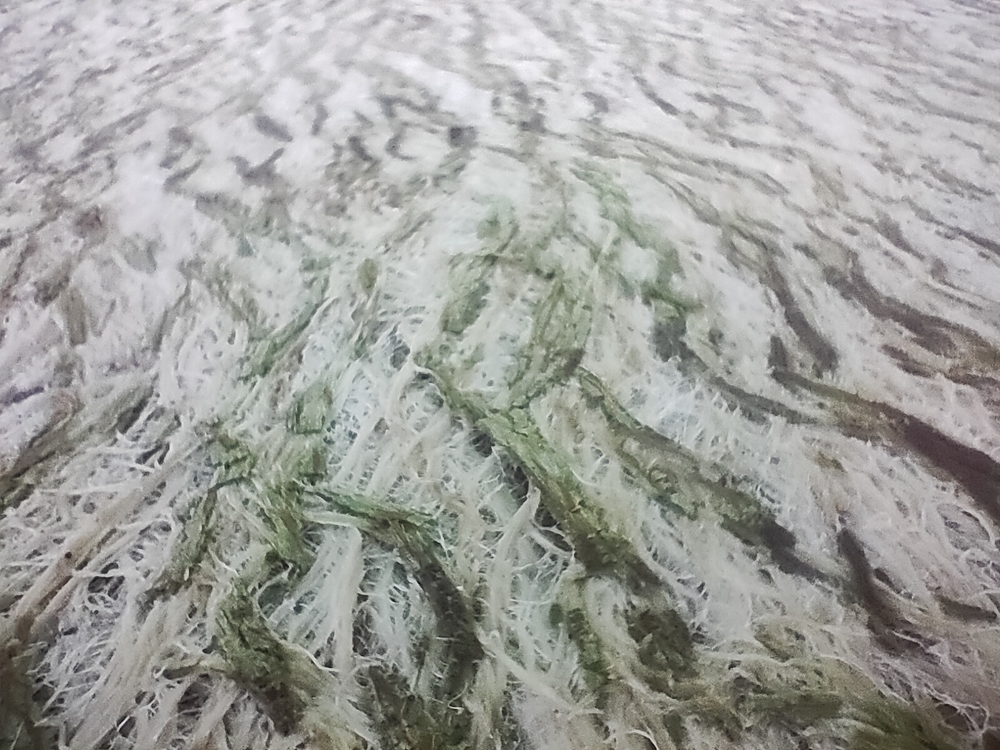 | 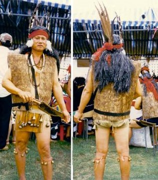 |
樹皮布是經由剝取構樹的外皮後，不斷敲打而成的天然布料，是台灣許多原住民族群的文化特色。但不同族群 擁有不同的生活運用方式，如將纖維成「線」做綁帶。然而，此文化在台灣過去曾失傳近五十年的時間，後來才由 一名阿美族耆老重新建立起這個文化命脈。 |
◆◇◆◇◆◇◆◇◆◇◆◇◆◇◆◆◇◆◇◆◇◆◇◆◇◆◇◆◇◆◇◆◇◆◇◆◇◆◇◆◇◆◇◆◇◆◇◆◇◆◇Dowm◆◇◆◇◆◇◆◇◆◇◆◇◆◇◆◇◆◇◆◇◆◇◆◇◆◇◆◇◆◇◆◇◆◇◆◇◆◇◆◇◆◇◆◇◆◇◆◇◆◇◆
◆◇◆◇◆◇◆◇◆◇◆◇◆◇◆◆◇◆◇◆◇◆◇◆◇◆◇◆◇◆◇◆◇◆◇◆◇◆◇◆◇◆◇◆◇◆◇◆◇◆◇Dowm◆◇◆◇◆◇◆◇◆◇◆◇◆◇◆◇◆◇◆◇◆◇◆◇◆◇◆◇◆◇◆◇◆◇◆◇◆◇◆◇◆◇◆◇◆◇◆◇◆◇◆
能做什麼 ?
| 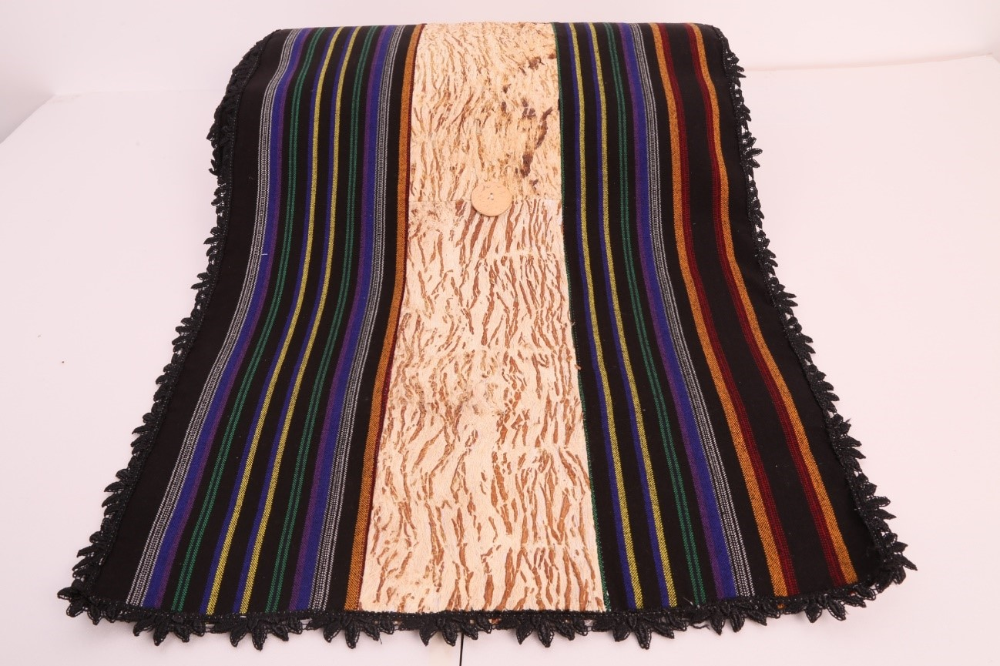 | 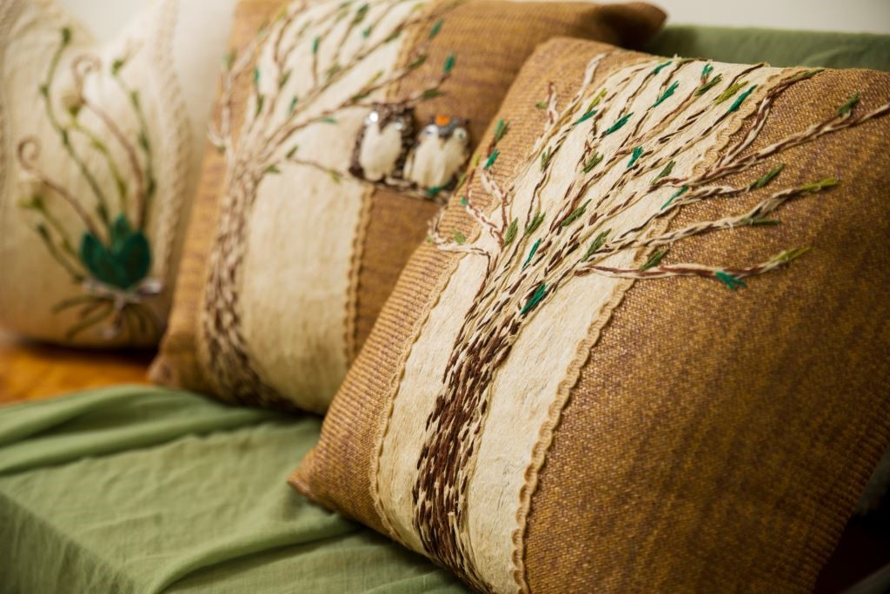 | 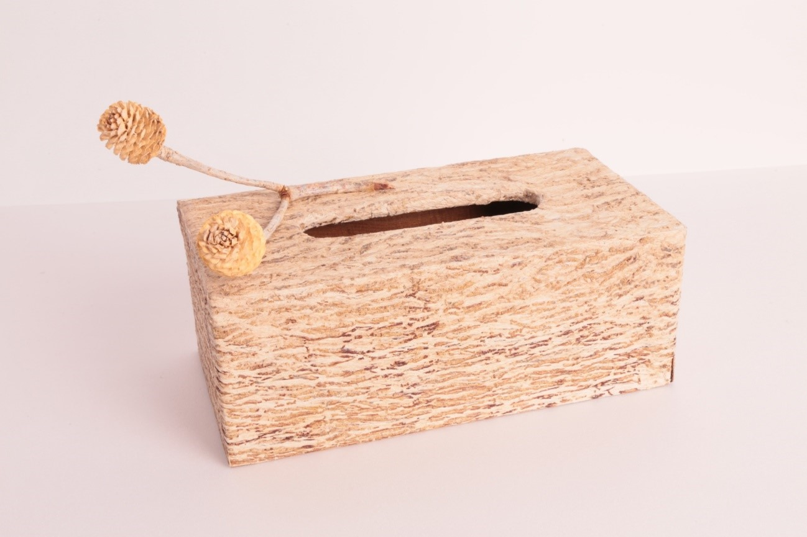 |
| 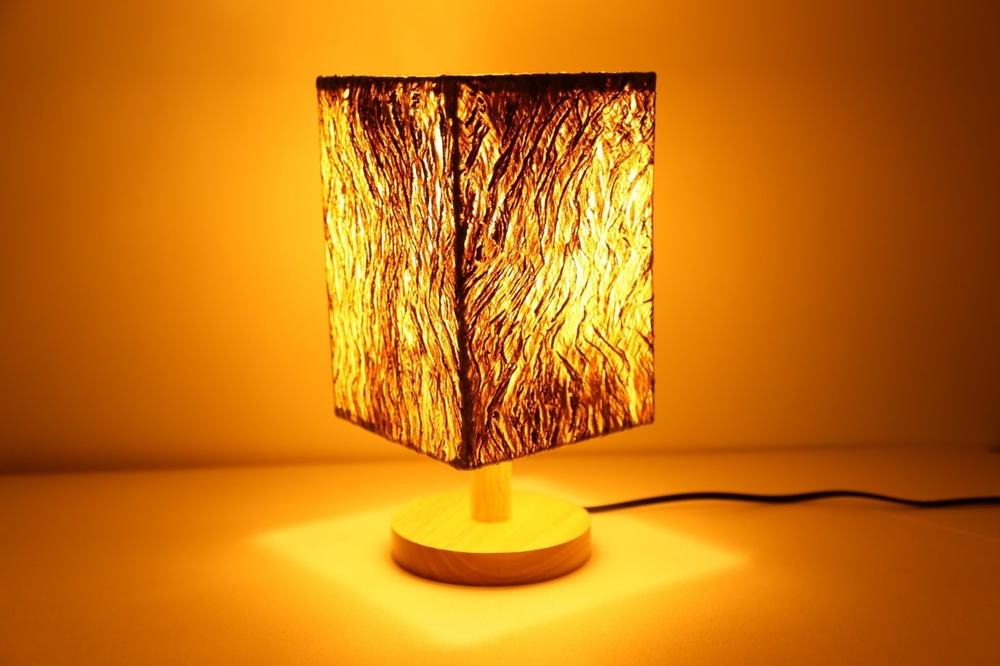 | 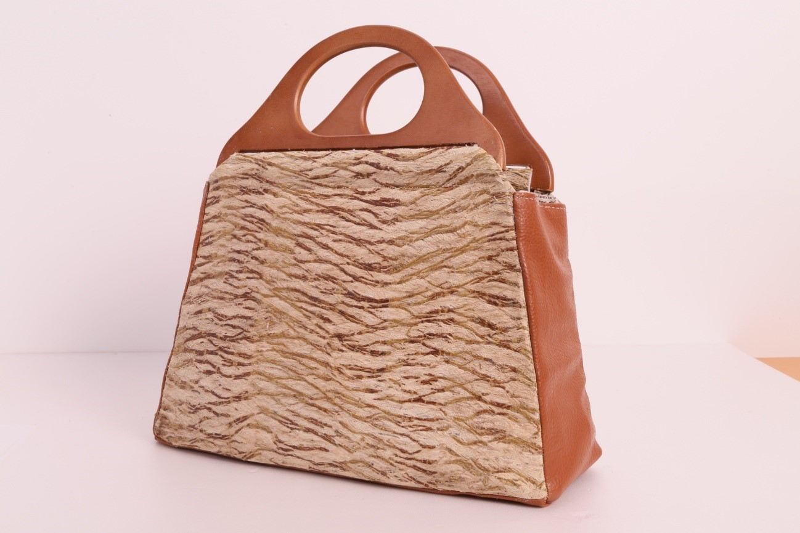 | 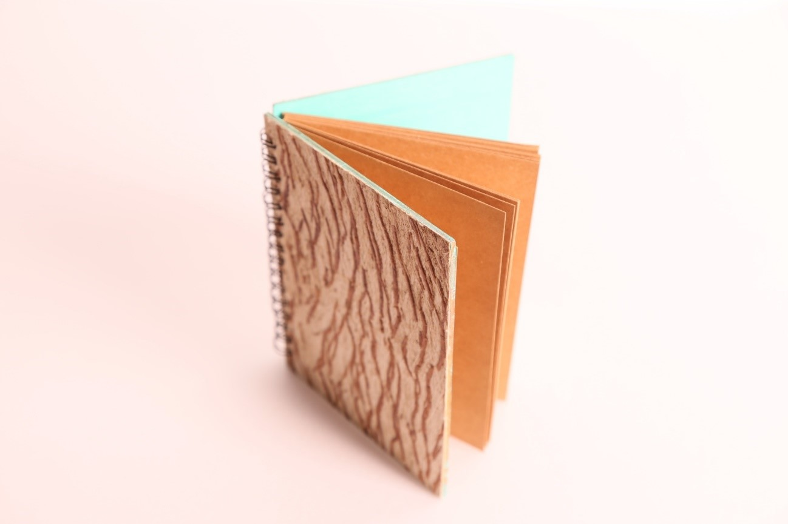 |
| 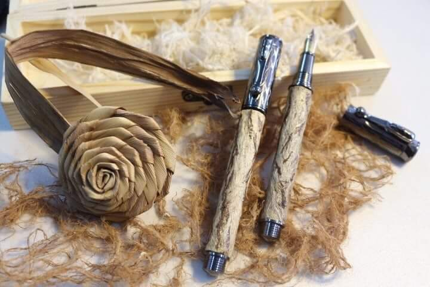 | 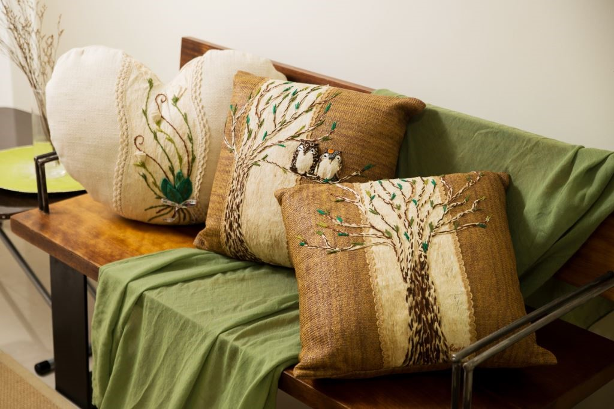 | 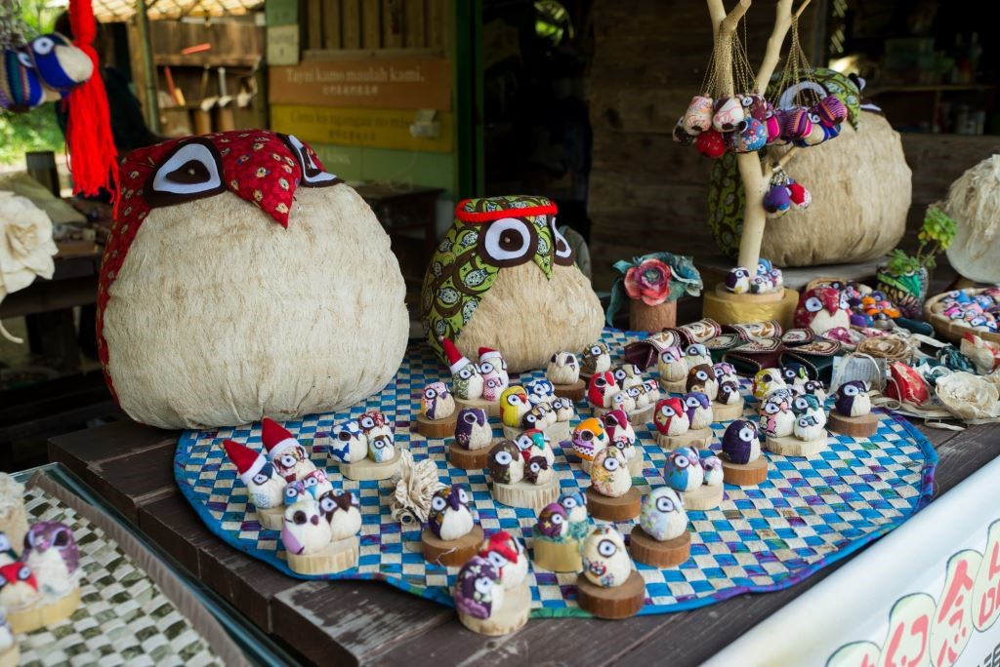 |